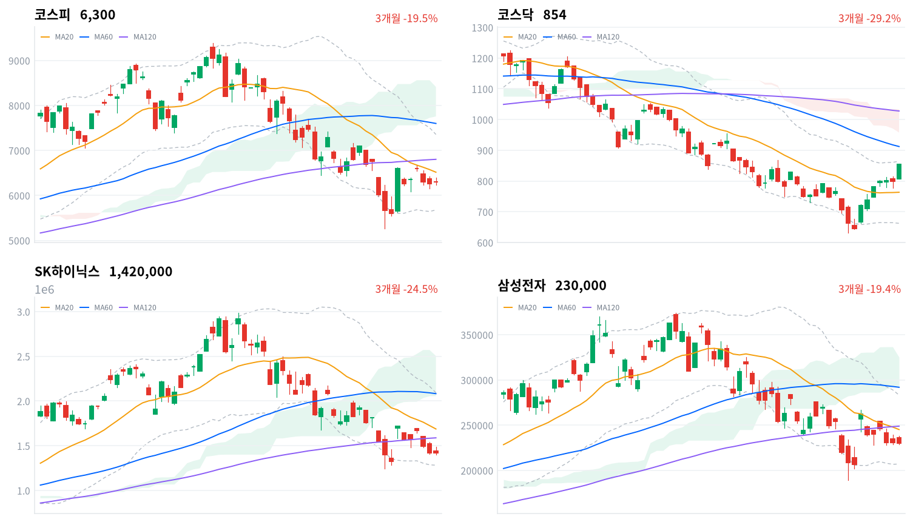
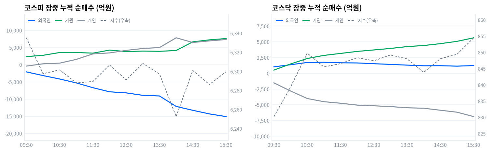

동인 코스닥이 전장 대비 55.66포인트(+6.97%) 급등한 854.47에 마감하며 이날 시장을 지배했다. 오전 9시50분 코스닥150 선물이 전일 종가 대비 6.05% 상승하고 코스닥150 지수가 6.25% 상승을 1분 이상 유지하며 매수 사이드카가 발동했는데, 8월 들어 세 번째(8/3·8/4에 이은)다. 상승 종목이 1,431개로 전체의 80%를 웃돌았고 상한가도 11개에 달해 폭넓은 개별종목 순환매였음을 보여준다. 배경에는 금융위원회의 단일종목 레버리지 ETF·ETN 규제 강화(기본예탁금 1,000만원→3,000만원 상향, 신규 상장 잠정 중단 등)로 SK하이닉스·삼성전자에 쏠렸던 레버리지 자금 일부가 코스닥 개별주로 옮겨간 정황이 있다 — "삼전닉스를 떠난 돈"이라는 시장 해석과 궤를 같이한다. 코스피는 전장 대비 40.89포인트(+0.65%) 오른 6,299.66에 마감해 코스닥만큼의 화력은 아니었지만 강보합을 지켰다.
크로스에셋·수급 정합성 코스피에서는 외국인이 1조4,909억원(당일 잠정) 순매도했지만 개인(+9,003억원)과 기관(+5,692억원)이 이를 고스란히 받아내며 지수를 지지했다. 코스닥은 반대로 개인이 6,729억원(당일 잠정) 순매도한 반면 외국인(+1,027억원)·기관(+5,667억원)이 매수에 나서며 +6.97% 급등을 뒷받침했다 — 두 시장의 수급 주체가 완전히 뒤바뀐 하루다. 프로그램 매매에서도 코스피는 비차익이 1조5,400억원 순매도(전체 순매도 1조3,661억원)를 기록한 반면 코스닥은 비차익·차익 모두 순매수(전체 +1,901억원)로, 두 시장의 디커플링과 방향이 일치한다. 거래대금 최상위는 여전히 SK하이닉스(4.72조원)·삼성전자(3.78조원) 개별주가 반도체 테마 ETF(1.19조원, 9종 합산)를 크게 앞섰는데, 정작 kr_industry.json의 '반도체와반도체장비' 업종 자체 등락률은 +0.30%(159/171 종목 상승)에 그쳐 — 대형주 쏠림 매수가 업종 전체 수익률로는 이어지지 않았다는 뜻이다.
다음 촉매·확인 트리거 기술적으로 코스피는 20일선(6,515.97포인트)은 물론 일목균형표 구름대(7,755.82~8,412.34포인트)까지 밑도는 상태라 20일선 회복 여부가 1차 확인 지점이다. 코스닥은 볼린저 상단(864.40포인트)에 %b 0.951로 바짝 붙어 있어 상단·20일 고점(867.38포인트) 돌파가 다음 관전 포인트이지만, 60일선(912.23포인트) 아래 역배열이 이어지고 있다는 점은 유의할 대목이다. 정책 측면에서는 금융위의 "과열 안 잡히면 추가 규제" 예고가 남아 있어 레버리지 ETF 자금 이탈이 이어지는지, 8월27일 한은 금통위를 앞두고 국고채 3년물이 기준금리(2.75%) 대비 102.8bp 벌어진 상태가 어떻게 움직이는지가 다음 며칠의 핵심 변수다.
| 지수 | 종가 | 등락률 | 일중 고가 | 일중 저가 |
|---|---|---|---|---|
| 코스피 | 6,299.66 | +0.65% | 6,394.06 | 6,232.45 |
| 코스닥 | 854.47 | +6.97% | 855.38 | 807.66 |
코스피는 전일 종가(6,258.77포인트) 대비 갭업 출발한 6,306.33포인트에서 장을 열었다. 30분봉 기준 09시00분 6,292.13포인트로 살짝 밀렸다가 09시30분 6,335.18포인트까지 반등했고, 일중 고점은 6,394.06포인트에 달했다.
이후 10시00분 6,297.54포인트로 되밀렸고 11시00분~13시00분 사이 6,287.94~6,308.31포인트의 좁은 박스권을 오갔다. 14시00분에는 6,252.56포인트까지 밀려 일중 저점(6,232.45포인트) 부근까지 근접했으나, 14시30분 6,300.93포인트로 급반등한 뒤 15시00분 6,286.19포인트로 소폭 되밀렸다가 15시30분 6,299.66포인트(+0.65%)로 마감했다.
코스닥은 전일 종가(798.81포인트) 대비 갭업 출발한 807.66포인트(=일중 저점)에서 장을 열었다. 30분봉 기준 09시00분 810.64포인트, 09시30분 830.22포인트로 빠르게 올라섰고 10시00분 839.30포인트, 10시30분 849.74포인트까지 치솟았다 — 오전 9시50분 매수 사이드카가 발동한 시점과 겹친다.
이후 11시00분 845.50포인트로 잠시 숨고르기했지만 12시00분~13시30분 사이 847~849포인트대의 박스권을 유지했고, 14시00분 843.84포인트로 살짝 밀렸다가 14시30분 848.02포인트, 15시00분 849.40포인트로 재차 오르며 15시30분 854.47포인트(+6.97%)로 일중 고점(855.38포인트) 부근에서 마감했다.
이날 상승의 트리거는 금융위원회의 단일종목 레버리지 ETF·ETN 규제 강화였다(스트레이트뉴스·인베스트조선 보도) — 기본예탁금 상향(1,000만원→3,000만원)과 신규 상장 잠정 중단으로 국내 상장 ETF 순자산총액이 한 달 새 15.2%(77조7,930억원) 줄었고, 그 자금 일부가 코스닥 바이오·2차전지·로봇 등 개별주로 이동했다는 분석이다(파이낸셜뉴스 보도). 코스닥150 선물이 오전 9시50분 6.05% 급등하며 매수 사이드카가 발동한 것도 이 자금 유입과 맞물린 결과로 풀이된다(이데일리 보도).

코스피 코스피는 6,299.66포인트로 마감해 20일선(6,515.97포인트)·60일선(7,599.97포인트)·120일선(6,802.51포인트)을 모두 밑도는 혼조 배열이고, 20일선 대비 이격도는 -3.32%다. 볼린저밴드(20,2σ) %b는 0.371로 중심선과 하단 사이에 위치하며, 일목균형표 구름대(7,755.82~8,412.34포인트) 아래에서 전환선(5,968.72포인트)은 웃돌지만 기준선(6,795.01포인트)은 밑돈다. 반등 시나리오는 20일선(6,515.97포인트) 회복이 1차 트리거로, 이를 넘으면 기준선(6,795.01포인트)·120일선(6,802.51포인트)이 순차 저항으로 남는다. 반대로 밀리면 볼린저 하단(5,675.86포인트)을 거쳐 20·60일 저점(5,262.77포인트)이 최후 지지선이다.
코스닥 코스닥은 854.47포인트로 20일선(763.39포인트)을 11.93% 웃돌지만 60일선(912.23포인트)·120일선(1,027.77포인트)은 밑도는 역배열 구조다. 볼린저 %b는 0.951로 상단(864.40포인트)에 바짝 붙어 단기 과열 신호가 뚜렷하고, 일목균형표 구름대(957.61~1,033.98포인트) 아래에서 전환선(743.18포인트)·기준선(753.19포인트)은 모두 상회했다. 상승 시나리오는 볼린저 상단(864.40포인트)과 20일 고점(867.38포인트) 돌파가 트리거로, 이를 넘으면 60일선(912.23포인트)까지 시야가 열린다. 반대로 기준선(753.19포인트)·20일선(763.39포인트)을 차례로 이탈하면 볼린저 하단(662.38포인트)을 거쳐 20·60일 저점(630.99포인트)이 최후 지지선이 된다.
SK하이닉스 SK하이닉스는 1,420,000원으로 마감해 20일선(1,687,300원)·60일선(2,082,333원)·120일선(1,588,183원)을 모두 밑도는 혼조 배열이며 20일선 대비 이격도는 -15.84%다. 볼린저 %b는 0.170으로 하단(1,282,255원)에 근접해 있고, 일목균형표 전환선(1,482,000원)조차 밑돈 채 구름대(2,054,000~2,504,000원)와는 거리가 멀다. 반등 시나리오는 전환선(1,482,000원) 회복이 1차 트리거로, 이를 넘으면 120일선(1,588,183원)·기준선(1,871,500원)이 순차 저항이 된다. 반대로 밀리면 볼린저 하단(1,282,255원)을 거쳐 20·60일 저점(1,246,000원)이 최후 지지선이다.
삼성전자 삼성전자는 230,000원으로 마감해 20일선(245,200원)·60일선(291,925원)·120일선(248,960원)을 모두 밑도는 혼조 배열이고 20일선 대비 이격도는 -6.20%다. 볼린저 %b는 0.301로 하단권에 위치하며, 일목균형표 전환선(228,100원)은 웃돌았지만 기준선(257,100원)과 구름대(292,500~325,125원)는 아직 멀다. 반등 시나리오는 20일선(245,200원) 회복이 1차 트리거로, 이를 넘으면 120일선(248,960원)·기준선(257,100원)이 순차 저항으로 남는다. 반대로 전환선(228,100원)을 이탈하면 볼린저 하단(207,089원)을 거쳐 20·60일 저점(189,200원)이 최후 지지선이 된다.
위 레벨은 kr_technical.json의 이동평균·볼린저밴드·일목균형표·스윙 고저를 기계적으로 계산한 것으로, 투자 권유가 아니다.
코스피 수급표를 보면 외국인이 1조4,909억원(당일 잠정) 순매도했지만 개인(+9,003억원)·기관(+5,692억원)이 함께 받아내며 지수는 오히려 강보합으로 마감했다. 코스닥은 정반대다 — 개인이 6,729억원(당일 잠정) 순매도한 반면 외국인(+1,027억원)·기관(+5,667억원)이 매수에 나서며 +6.97% 급등을 뒷받침했다.
| 코스피 (억원, 당일 잠정) | 개인 | 외국인 | 기관 |
|---|---|---|---|
| 2026-08-10 | +9,003 | -14,909 | +5,692 |
| 코스닥 (억원, 당일 잠정) | 개인 | 외국인 | 기관 |
|---|---|---|---|
| 2026-08-10 | -6,729 | +1,027 | +5,667 |
코스피에서 외국인 매도(1조4,909억원)는 코스닥으로 옮겨간 레버리지 자금 이동과 시기적으로 맞물리지만, 오늘 하루만의 자료로는 외국인 매도가 관세 우려 때문인지 레버리지 상품 자금 이동 때문인지 단정하기 어렵다. 개인·기관이 이를 받아낸 결과 코스피는 6,299.66포인트(+0.65%)로 마감했다. 코스닥에서는 외국인·기관이 함께 순매수(+1,027억원·+5,667억원)에 나섰고, 개인 매도(-6,729억원)에도 불구하고 지수가 급등했다는 점에서 외국인·기관 주도의 매수가 이번 랠리의 실질적 동력이었다고 읽을 수 있다.

| 시각 | 코스피 (억원) | 코스닥 (억원) | ||||
|---|---|---|---|---|---|---|
| 개인 | 외국인 | 기관 | 개인 | 외국인 | 기관 | |
| 09:30 | -412 | -2,095 | 2,350 | -1,529 | 1,024 | 509 |
| 10:00 | 256 | -3,169 | 2,723 | -2,816 | 1,356 | 1,479 |
| 10:30 | 444 | -4,170 | 3,535 | -4,011 | 1,718 | 2,347 |
| 11:00 | 1,535 | -5,304 | 3,550 | -4,515 | 1,747 | 2,839 |
| 11:30 | 3,139 | -6,703 | 3,352 | -4,760 | 1,668 | 3,153 |
| 12:00 | 3,425 | -7,897 | 4,243 | -5,059 | 1,640 | 3,472 |
| 12:30 | 4,159 | -8,216 | 3,812 | -5,167 | 1,520 | 3,707 |
| 13:00 | 4,711 | -8,928 | 3,956 | -5,292 | 1,410 | 3,944 |
| 13:30 | 4,989 | -9,112 | 3,887 | -5,481 | 1,294 | 4,242 |
| 14:00 | 7,824 | -12,155 | 4,132 | -5,558 | 1,192 | 4,410 |
| 14:30 | 6,463 | -13,286 | 6,644 | -5,875 | 1,205 | 4,707 |
| 15:00 | 6,925 | -14,334 | 7,224 | -6,186 | 1,130 | 5,073 |
| 15:30 | 7,326 | -15,112 | 7,605 | -6,883 | 1,226 | 5,637 |
코스피 외국인 누적 순매도선은 장중 방향 전환 없이(turns 없음) 하루 종일 매도 강도를 키웠다 — 09시30분 -2,095억원에서 15시30분 -15,112억원까지 반전 없이 매도가 불어났고, 관측 구간 내 최댓값은 09시01분 -1,179억원, 최솟값은 15시21분 -15,112억원이었다. 지수 궤적과 맞춰보면 13시30분(-9,112억원)에서 14시00분(-12,155억원) 사이 외국인 매도가 30분 만에 3,043억원 급증한 시점은 코스피가 14시00분 6,252.56포인트로 일중 저점권까지 밀린 타이밍과 겹친다.
이후 14시30분 매도가 -13,286억원까지 더 깊어졌음에도 코스피는 6,300.93포인트로 급반등했는데, 같은 시각 기관 누적 순매수가 4,132억원에서 6,644억원으로 뛰어오른 점을 보면 개인 매수(7,824억원→6,463억원, 오히려 소폭 둔화)보다 기관이 그 자리를 메우며 외국인 매도 가속을 받아낸 결과로 풀이된다.
기관 내부를 나누면 코스피 금융투자(프로그램·선물 연계, 기계적 성격)는 09시30분 +883억원에서 반전 없이 불어나 15시30분 +6,684억원까지 늘며 기관 순매수의 핵심 축이 됐다. 반면 연기금등(정책성 장기 자금)은 09시30분 +1,117억원에서 시작해 11시30분 -318억원, 14시30분 +906억원 사이를 오가며 뚜렷한 방향성 없이 등락하다 15시30분 +199억원으로 마감해, 오늘 코스피 기관 순매수는 연기금이 아니라 금융투자 주도로 판단된다.
다만 이는 뒤따르는 코스피 프로그램 매매의 비차익 순매도(-1조5,400억원)·전체 순매도(-1조3,661억원)와는 방향이 정반대다 — 투자주체별 '금융투자' 분류와 프로그램(차익+비차익) 매매 집계 기준이 서로 달라 직접 비교는 신중해야 하지만, 적어도 '기관 매수=프로그램 매수'로 단순화할 수 없다는 뜻이다. 코스닥에서는 금융투자(254억원→2,993억원)와 연기금등(68억원→822억원)이 모두 반전 없이 함께 늘어나며 기관 순매수를 뒷받침했다 — 코스피와 달리 정책성 자금까지 가세한 폭넓은 매수였고, 이는 코스닥 프로그램 매매의 비차익(+1,736억원)·차익(+165억원)이 모두 순매수였던 점과도 방향이 일치한다.
코스닥 외국인 누적선은 장중 방향 전환 없이 순매수 기조를 유지했다 — 관측 구간 내 최댓값은 10시52분 1,866억원, 최솟값은 09시01분 71억원이다. 개인은 반대로 반전 없이 매도를 키워 09시30분 -1,529억원에서 15시30분 -6,883억원까지 순매도를 확대했다 — 개인이 매도한 코스닥 물량을 외국인·기관이 함께 받아내며 지수를 +6.97%까지 끌어올린 구도다.
정규장 마지막 관측치(15시30분) 기준 코스피 외국인 누적은 -1조5,112억원, 개인은 +7,326억원, 기관은 +7,605억원이었으나, 이후 확정 발표된 수치는 외국인 -1조4,909억원(당일 잠정)·개인 +9,003억원·기관 +5,692억원으로 정정됐다 — 외국인 매도가 확정 과정에서 203억원 줄고 개인 매수는 1,677억원 늘어난 반면 기관 매수는 1,913억원 줄었다. 코스닥에서도 정규장 마지막 관측(개인 -6,883억·외국인 +1,226억·기관 +5,637억)과 확정치(개인 -6,729억·외국인 +1,027억·기관 +5,667억) 사이에 소폭 차이가 있다.
다음 거래일에는 코스피 기관 매수가 확정 과정에서 실제로 장중 스냅샷보다 줄었는지, 금융투자 주도의 매수 기조가 이어지는지를 확정치 발표 흐름으로 재확인할 필요가 있다.
| 구분 (억원, 당일 잠정) | 차익 순매수 | 비차익 순매수 | 전체 순매수 |
|---|---|---|---|
| 코스피 | +1,739 | -15,400 | -13,661 |
| 코스닥 | +165 | +1,736 | +1,901 |
코스피 프로그램 매매는 비차익(방향성 바스켓)이 1조5,400억원 순매도를 기록해 전체 순매도(1조3,661억원)를 사실상 주도했고, 차익거래(선물 연계 기계적 매매)는 오히려 1,739억원 순매수로 반대 방향이었다. 비차익 매도의 방향은 외국인 순매도(1조4,909억원, 당일 잠정)와 규모·방향이 유사해, 오늘 외국인 매도의 상당 부분이 바스켓 단위 프로그램 매매를 통해 집행됐을 가능성을 시사한다 — 다만 코스피가 이런 대규모 프로그램 순매도에도 +0.65% 상승 마감한 것은 비프로그램 채널(개인·기관의 개별 종목 직접 매수)이 그보다 더 크게 지수를 밀어올렸다는 뜻이다.
코스닥은 비차익(+1,736억원)·차익(+165억원) 모두 순매수를 기록해 총 1,901억원 순매수를 나타냈는데, 이는 코스닥 외국인(+1,027억원)·기관(+5,667억원, 모두 당일 잠정) 순매수 방향과 일치해 매수 사이드카 발동 이후 방향성 바스켓 매수가 실제로 유입됐음을 뒷받침한다.
| 순위 | 종목/ETF | 구분 | 거래대금 | 거래량 | 비고 |
|---|---|---|---|---|---|
| 1 | SK하이닉스 | - | 4.72조 | 3,289,681 | - |
| 2 | 삼성전자 | - | 3.78조 | 16,324,865 | - |
| 3 | 반도체 테마 ETF | 롱 | 1.19조 | 48,433,732 | 9종 합산 |
| 4 | 삼성전자우 | - | 0.33조 | 1,928,354 | - |
| 5 | SK하이닉스 레버리지 | 롱 | 0.31조 | 44,436,088 | 2종 합산 |
| 6 | 한화솔루션 | - | 0.27조 | 7,666,392 | - |
| 7 | 2차전지 테마 ETF | 롱 | 0.22조 | 114,838,377 | 6종 합산 |
| 8 | GS건설 | - | 0.17조 | 4,877,996 | - |
| 9 | SK하이닉스 인버스 | 숏 | 0.15조 | 14,306,747 | - |
| 10 | 광전자 | - | 0.15조 | 16,496,300 | - |
SK하이닉스 레버리지(0.31조원)가 인버스(0.15조원)의 두 배를 웃돌아 개인이 반도체 대형주를 숏이 아니라 저가 매수 기회로 받아들였음을 시사한다. 반도체 테마 ETF는 SOL AI반도체TOP2플러스·TIGER 반도체TOP10·KODEX 반도체레버리지·KODEX AI반도체TOP2플러스·ACE K반도체TOP2+·SOL 반도체전공정·TIGER 반도체TOP10레버리지·TIGER 반도체TOP10커버드콜액티브·SOL AI반도체소부장 등 9종을 합산한 값(1.19조원)이다.
같은 반도체 계열 개별주(SK하이닉스 4.72조+삼성전자 3.78조+삼성전자우 0.33조)와 레버리지 상품(0.31조)을 더하면 9.14조원에 달해 테마 바스켓(1.19조원)의 약 7.7배다 — 개인·기관이 반도체를 산업 전체로 바스켓 매수한 게 아니라 SK하이닉스·삼성전자 개별 종목에 선별적으로 집중했다는 뜻이고, 이는 §7에서 확인되는 '반도체와반도체장비' 업종 자체 등락률(+0.30%)의 미미함과도 정합한다.
2차전지 테마 ETF(KODEX 2차전지산업레버리지·TIGER 2차전지TOP10레버리지·TIGER 2차전지소재Fn·TIGER 2차전지TOP10·KODEX 2차전지산업·KODEX 2차전지핵심소재10 등 6종 합산, 0.22조원)는 top10에 들었지만 개별 2차전지 종목(에코프로비엠 등)은 이름을 올리지 못했다 — 반도체와 달리 2차전지 자금은 개별주보다 바스켓 중심으로 유입된 것으로 보인다. GS건설(0.17조원)은 AI 데이터센터·베트남 원전·주택 정비사업 겹호재가 반영된 것으로 보이며, 광전자(0.15조원)는 AI·반도체 관련 기대감에 상한가권까지 급등했지만 이 재료는 단일 매체 보도에 의존하고 있어 해석에 신중함이 필요하다.
위 섹터 차트(1D 기준 12개 테마)에서는 방산(+5.25%)·헬스케어(+4.90%)·2차전지(+4.21%)가 상위권이었고 은행만 -2.80%로 유일하게 뚜렷한 약세를 보였다. 더 세분화된 kr_industry.json(60개 업종) 기준으로는 비철금속(+10.01%, 40종목 중 34종목 상승, breadth 0.85, 폭넓은 상승 주도)·생물공학(+9.56%, breadth 0.776, 폭넓은 상승 주도)·통신장비(+8.87%, breadth 0.815, 폭넓은 상승 주도)가 강세를 보였는데 이 세 업종은 12개 테마 목록에는 별도로 잡히지 않는다.
우주항공과국방(+5.72%, breadth 0.909, 폭넓은 상승 주도)은 12-테마의 방산(+5.25%) 강세를 뒷받침하는 근거가 된다.
반면 '반도체와반도체장비' 업종은 breadth가 0.93(171종목 중 159종목 상승)으로 폭넓은 상승 주도로 분류됐음에도 등락률 자체는 +0.30%에 그쳐, 12-테마의 반도체(+3.57%)와는 크게 어긋난다 — 종목 수 기준으로는 거의 전 업종이 올랐지만 평균적인 상승폭은 미미했다는 뜻이고, §6에서 확인한 대로 실제 거래대금은 SK하이닉스·삼성전자 두 종목에 압도적으로 쏠려 있었다. 창업투자(+6.51%, breadth 0.556, 좁은 상승·개별종목)·건강관리업체및서비스(+5.89%, breadth 0.733, 좁은 상승·개별종목)는 등락률 자체는 상위권이지만 좁은 상승·개별종목으로 분류돼, 상승률만으로 업종 전체의 주도력을 단정할 수 없다는 점을 다시 확인해준다.
코스닥은 상승 종목이 1,431개(전체의 80%대)에 달하고 상한가도 11개를 기록하며 폭넓은 순환매를 보였다. 오전 9시50분 코스닥150 선물·지수가 각각 6.05%·6.25% 급등하며 매수 사이드카가 발동했는데, 8월 들어(최근 6거래일 중) 세 번째다(이데일리·뉴스핌 보도). 바이오·제약을 중심으로 반도체 장비·2차전지·로봇 등 시총 상위 종목까지 매수세가 확산됐고, 금융위의 단일종목 레버리지 ETF 규제로 SK하이닉스·삼성전자 관련 레버리지 자금이 위축된 여파로 "삼전닉스를 떠난 자금"이 코스닥으로 이동했다는 해석이 나온다(파이낸셜뉴스 보도).
한화솔루션은 장 초반 8%대 강세를 보이며 VI가 발동했다. 김동관 부회장이 유상증자에 직접 참여해 신주를 취득한 것이 투자심리 개선 요인으로 보도됐다(서울경제 보도). GS건설은 +10.60%(32,350원)를 기록했는데, GS그룹의 2028년까지 1.2GW급 AI 데이터센터 투자, 베트남 원전 진출, 주택 정비사업 수주 확대라는 세 갈래 호재가 겹친 결과로 분석된다(파이낸셜뉴스 보도, BNK투자증권 목표주가 5만원 유지).
알테오젠은 +14.10%(348,000원)로 7거래일 연속 상승했다. 2분기 연결 매출 689억원(전년동기 대비 +270%), 영업이익 342억원 흑자전환(잠정)에 더해 블랙록펀드어드바이저스가 지분 2만4,273주를 장내 매수해 지분율 5.03%에 도달한 점이 겹호재로 작용했다(한국경제 보도). 에코프로비엠은 +7.29%(114,800원)로 2차전지 순환매 수혜를 봤다. 광전자는 상한가권까지 급등했는데, AI·반도체 관련 기대감이 매수세를 이끈 것으로 보도됐으나 출처 신뢰도가 단일 매체에 의존하고 있어 신중하게 다룰 필요가 있다.
SK하이닉스·삼성전자는 거래대금 1·2위(4.72조원·3.78조원)를 유지하며 코스피 최상위 종목 지위를 지켰다. 메모리 공급 부족에 따른 가격 결정력 강화 기대가 배경으로 거론되며, 범용 D램 가격 상승이 HBM 수익성을 상회할 것이란 전망이 증권가에서 제기됐다(뉴스핌 보도). 다만 반도체 관련 자금 순환의 일부는 코스닥으로 옮겨간 정황이 뚜렷하다.
이번 사이클 입력 자료에는 원/달러 환율 데이터가 포함되지 않아, 아래 국고채 금리만 다룬다.
| 지표 | 금리 | 전일比(bp) | 기준일 |
|---|---|---|---|
| 국고채 3년 | 3.778% | +3.2bp | 2026-08-10 |
| 국고채 10년 | 4.239% | +3.1bp | 2026-08-10 |
| CD 91일 | 2.930% | +0.0bp | 2026-08-10 |
| 회사채 AA- 3년 | 4.476% | +2.8bp | 2026-08-10 |
| 한국은행 기준금리 | 2.750% | +25.0bp | 2026-07 (7월 기준, 당일 아님) |
국고채 3년물(+3.2bp)과 10년물(+3.1bp)이 나란히, 비슷한 폭으로 올라 3s10s 스프레드는 46.1bp(10년 4.239%-3년 3.778%)로 직전 관측일(8/7, 46.2bp)과 거의 같았다 — 평행 이동에 가까운 약한 흐름으로, 뚜렷한 스티프닝·플래트닝으로 보기는 어렵다. 코스닥이 6.97% 폭등하고 코스피도 강보합 마감한 날임에도 채권 금리가 전 구간에서 소폭 상승했다는 점은, 오늘 증시 강세가 유동성 완화가 아니라 개별 종목·수급 재료(레버리지 자금 이동, 매수 사이드카)에서 비롯됐음을 뒷받침한다.
국고채 3년물(3.778%)은 한국은행 기준금리(2.75%, 7월 기준)보다 102.8bp 높다 — 8월27일 금통위를 앞두고 추가 인상 기대가 시장 금리에 이미 상당 부분 선반영돼 있다는 뜻이다. 회사채 AA- 3년물과 국고채 3년물의 신용 스프레드는 직전 관측일 70.2bp(4.448%-3.746%)에서 오늘 69.8bp(4.476%-3.778%)로 소폭 좁혀졌다 — 코스닥 급등 등 위험선호 회복과 방향이 일치하는 신용 심리 개선 신호로 읽을 수 있다.
다만 원/달러 환율 데이터가 없어 국고채 10년물·외국인 순매도·환율의 삼각 연계는 이번 사이클에서 확인하지 못했다.
금융위원회가 국내 우량주식 기초 단일종목 레버리지 ETF·ETN의 과열을 진정시키기 위해 규제를 연속 강화했다. 기본예탁금을 1,000만원에서 3,000만원으로 상향(현금만 인정, 주식·채권 등은 불인정)했고, 신규 상장은 잠정 중단됐으며, 광고·이벤트성 마케팅이 금지되고 매매수량 단위도 1좌에서 20좌로 확대됐다. 금융위는 "과열이 안 잡히면 추가 규제"를 예고했고, 이 여파로 국내 상장 ETF 순자산총액이 한 달 새 77조7,930억원(15.2%) 감소했다(434조6,150억원 기준, 스트레이트뉴스·파이낸셜뉴스·인베스트조선 보도).
전달 경로는 수급이다 — SK하이닉스·삼성전자 등에 집중됐던 단일종목 레버리지 매매 자금 일부가 규제로 위축되며 코스닥 바이오·2차전지·로봇 등 순환매로 이동했다. 거래대금이 아니라 매매 주체의 자금 재배분(레버리지 상품 유동성 위축 → 개별 종목 직접 매수 선호)이 핵심 경로다.
코스닥 바이오(알테오젠 등)·2차전지(에코프로비엠)·로봇이 수혜를 봤고, 코스피 반도체 레버리지 상품은 상대적으로 위축됐다. 실제로 §6의 거래대금 표에서 SK하이닉스 레버리지(0.31조원)·인버스(0.15조원)가 SK하이닉스 개별주(4.72조원) 대비 미미해 레버리지 상품으로의 쏠림이 약화된 정황과 정합하고, 코스닥 급등(+6.97%, 상승종목 80%대)도 이 자금 이동과 방향이 일치한다 — "아직 반영 안 됨"이 아니라 오늘 가격에 이미 반영된 재료로 판정된다.
금융위가 "과열 안 잡히면 추가 규제"를 예고했으나 구체 시점은 미확정이다. 다음 확인 트리거는 단일종목 레버리지 ETF 거래대금·순자산 감소 추세의 지속 여부와 코스닥 자금 유입이 이어지는지다.
2026년 2월25일 국회 본회의를 통과한 개정 상법이 자사주 취득일로부터 1년 내 소각을 원칙으로 규정한다. 2026년 3월6일 이전 보유 자사주도 시행일로부터 1년6개월 이내 소각하거나 별도 보유계획을 수립해 주총 승인을 받아야 한다. 경영상 목적이 인정되면 예외적 보유가 가능하지만 매년 보유·처분 계획서 작성과 주총 승인 의무가 따른다. 2026년 1월 기준 177개 상장사가 밸류업 계획을 공시했다(법률신문·김·장 법률사무소 자료).
전달 경로는 멀티플이다 — 경영권 방어·지배력 확대 수단으로 쓰이던 자사주가 강제 소각되며 유통주식수가 줄고 지배구조 불확실성(거버넌스 할인)이 축소돼 코리아 디스카운트 해소 재료로 밸류에이션 리레이팅 기대를 낳는다.
자사주 비중이 높은 대형주·지주사 전반이 잠재 수혜 구간이다. 오늘 코스피는 강보합(+0.65%)에 그쳐 이 재료가 오늘 하루의 가격에 뚜렷이 반영됐다고 보기는 어렵다 — 오늘의 급등은 코스닥·레버리지 규제 재료가 지배적이었고, 이 상법 재료는 2월 국회 통과 이후 누적 반영이 진행된 "이미 선반영"된 재료로 판정하는 편이 합리적이다.
2026년 3월6일 이전 보유 자사주의 소각 시한(시행일+1년6개월)이 다가올수록 개별 종목별 소각 공시가 이어질 전망이다 — 개별 기업의 자사주 소각 발표 뉴스가 다음 확인 트리거다.
한국 정부가 미국의 "특정민감국가" 지정 해제를 위한 외교적 노력을 강화하고 있으며, 8월 데드라인을 앞두고 관세 협상이 진행 중이다. 정부 관계자는 "상호관세 리스크가 현실화되면 반도체·자동차·철강 등 핵심 수출 품목에 직접 타격"이라고 언급했다. 전문가들은 이번 협상이 단순 관세율이 아니라 투자·공급망·수출통제·안보정책이 결합된 패키지 협상이라고 평가한다(부산합스·tradingeconomics 보도).
전달 경로는 이익(수출기업 원가·마진)과 수급(외국인의 한국 수출주 배분) 두 갈래다. 협상이 타결되면 반도체·AI 수출 호조에 우호적이지만, 장기화되면 수출기업 불확실성 프리미엄이 확대된다.
반도체(SK하이닉스·삼성전자)·자동차·철강이 직접 영향권이다. 오늘 코스피 외국인이 1조4,909억원(당일 잠정) 순매도한 점은 이 통상 불확실성과 부분적으로 정합하지만, 국내 수급(개인·기관 매수)이 이를 받아내며 지수는 강보합을 유지했다 — 외국인 매도가 관세 우려 때문인지 레버리지 자금 이동 때문인지는 오늘 자료만으로 단정할 수 없어 "아직 반영 안 됨"에 가깝다고 판단한다.
8월 중 데드라인이 예정돼 있으나 구체 일자는 확인된 보도가 없어 "일정 미확정"으로 남긴다. 다음 확인 트리거는 한미 정부 간 공식 발표와 특정민감국 지정 해제 여부다.
한국은행 기준금리는 2.75%(2026년 7월 기준, 전월 대비 +25bp)이며, 다음 통화정책방향 결정회의는 2026년 8월27일로 예정돼 있다(뉴시스 등 보도).
전달 경로는 유동성·할인율이다 — 국고채 3년물(3.778%, 전일比 +3.2bp)이 기준금리 대비 102.8bp 높은 수준을 유지하고 있어, 추가 인상 기대가 이미 시장금리에 상당 부분 선반영돼 있다는 뜻이다.
통상 금리 상승 국면에서는 은행 업종이 순이자마진 기대로 수혜를 보는 경우가 많은데, 오늘 12-테마 섹터 스니펫 기준 은행은 -2.80%(1D)로 12개 테마 중 유일한 뚜렷한 약세를 보였다 — 국고채 금리가 오르는 방향과 은행 주가가 반대로 움직인 셈이라, 오늘 하루만 놓고 보면 이 재료가 가격에 "아직 반영 안 됨" 내지는 은행 업종에 한해 어긋난 방향으로 나타났다고 판정한다.
8월27일 금통위 정례회의가 다음 확인 포인트다 — 추가 인상 여부와 위원별 소수의견이 관전 포인트이며, 시장 일각의 25bp 추가 인상 기대가 실제로 반영될지는 회의 결과 발표 전까지는 확정되지 않는다.